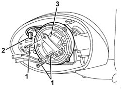

7005R36 DOOR MIRROR MOTOR - R R
- Path
- Procedures > 70 FITTINGS > 7005 PASSENGER COMPARTMENT FRONT SIDE DOORS > 7005R FRONT DOOR MIRRORS > 7005R36 DOOR MIRROR MOTOR - R R
- Kind
- repair procedure (removal / refitting; the operation number is the code)
- Applies to
- all engines; all production periods
- Interactive page
- https://sloeber94.github.io/elrnDB-aGt/en/#/125001803
Applies to: all engines; all production periods
 Removing
Removing
 Refitting
RefittingOp. 7005E12 CORNER COVER OF ONE FRONT SIDE DOOR, LH OR RH R R
Op. 7005R30 ELECTRICALLY CONTROLLED DOOR MIRROR (ONE) - R+R
Op. 7005R35 DOOR MIRROR REFLECTOR - R R
1. Undo the bolts.
2. Move the motor and disconnect the electrical connection.
3. Recover the motor.

Applies to: all engines; all production periods
Refitting
RemovingCheck that the motor is undamaged, and if necessary conduct an electrical test on it.
Connect the electrical connection.
Fit the motor and secure with bolts.
Op. 7005R35 DOOR MIRROR REFLECTOR - R R
Op. 7005R30 ELECTRICALLY CONTROLLED DOOR MIRROR (ONE) - R+R
Op. 7005E12 CORNER COVER OF ONE FRONT SIDE DOOR, LH OR RH R R